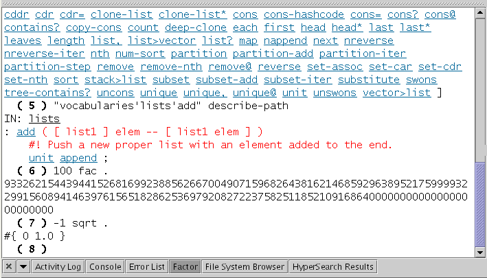
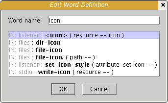
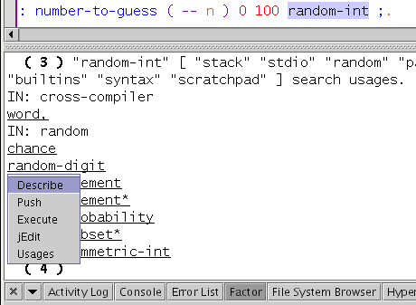
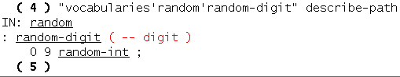
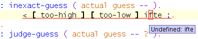
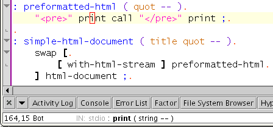
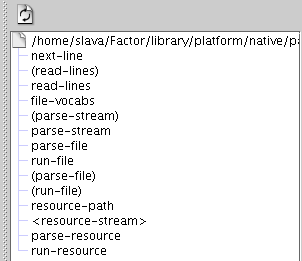

Factor is a programming language with postfix syntax. The Factor plugin for jEdit provides many nifty time-saving features for working with Factor code.
Factor.jar can then be placed in $HOME/.jedit/jars/ and loaded by jEdit.Note that while the Factor plugin requires jEdit 4.2pre15, you will need to download and install the Factor edit mode separately from the Factor home page. If you are running jEdit 4.2final, this edit mode is already included.
The plugin embeds a Factor interpreter inside jEdit that gets lazily loaded when first used. The interpreter communicates with the plugin and vice versa to perform various useful tasks.
The Run current file and Evaluate selection commands can be used to send text from jEdit to the interpreter.

If you have CFactor installed, it is possible to embed it in jEdit using the inferior.factor socket protocol. Add the following to your $HOME/.factor-rc:
USE: telnetd : inf 9999 telnetd ; : cfactor "localhost" 9999 <client> inferior-client ;
Now, start CFactor and type the following phrase:
inf
Then open the Factor listener window in jEdit, and type the following phrase:
cfactor
You will now be talking to the CFactor interpreter prompt. Styled text output and hyperlinks will be transmitted using the inferior.factor socket protocol.
The Edit word at caret command opens the source file containing the definition of the word at the caret. See word at caret shows the definition of the word at the caret in the Factor listener window.
The Edit word command opens a dialog box where the name of a word can be typed -- while the word is being typed, the possible completions is instantly updated, and selecting one opens the source file containing the definition of that word:
To be able to edit definitions of standard library words, add a phrase like the following to your $HOME/.factor-rc:
"/home/slava/Factor/" "resource-path" set
The Word usages at caret command displays a list of words that refer to the word at the caret in the Factor listener window. Clicking on words in the listener shows a popup menu with various useful actions.
Here we see the result of selecting Describe.
Factor files are parsed in a background thread and checked for errors, using the framework provided by the SideKick plugin. Errors are underlined in the text area (and listed in the ErrorList plugin window).
A common error is a missing USE: declaration. The Use word at caret command searches for the word at the caret in all vocabularies, and adds a USE: declaration for the vocabulary to the start of the source file -- in this case, ifte is found in the combinators vocabulary, and the parse error instantly goes away:
The stack effect of the word at the caret is shown in the status bar.
Invoking Plugins>SideKick>Show Completion Popup displays a popup of possible completions for the word at the caret -- bind this to C+SPACE for quick access:
The Plugins>SideKick>Structure Browser displays a list of all words defined in the current buffer:
